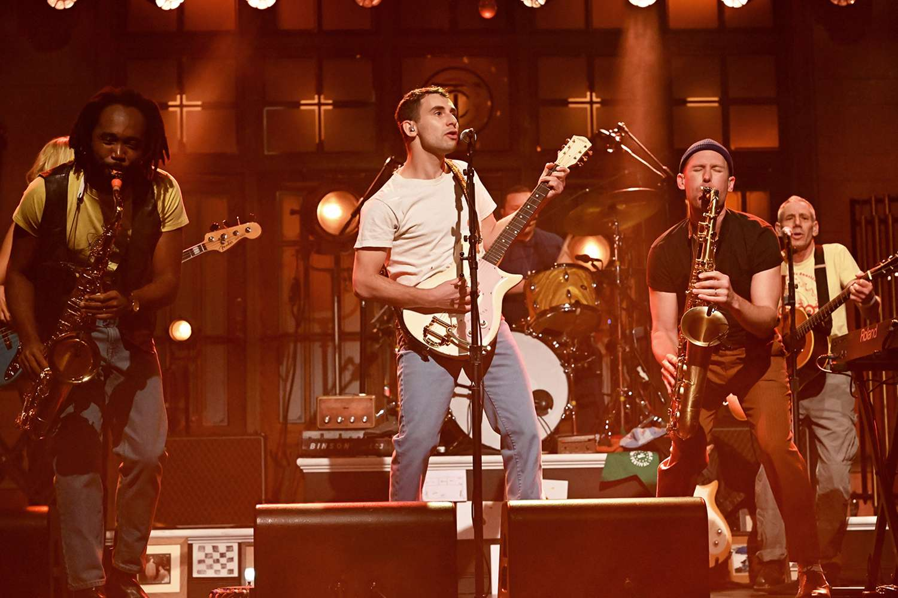

Concerts
- Bleachers
- Quinn XCII
- half·alive
Artists
The success of an artist comes largely from their ability to perform on the stage. Fans pay up to hundreds and even thousands to see their favorite artists perform, which leaves the responsibility of satisfaction on the shoulders of the artist. I have had the opportunity to see many artists in concert, and I hope to see many more. I feel as though reviewing shows is an essential part of reviewing music. If the song can't be performed well, then is it truly a good song? I understand a lot of the execution of a song's performance comes down to the artist, but if it is their song then they should be able to perform it well. With that being said, here are some concerts that either I have seen or others have and our thoughts on the showmanship of these artists.
Bleachers: A Nostalgic Rollercoaster with Jack Antonoff
Attending a Bleachers concert feels like stepping into a sonic time machine, with Jack Antonoff at the helm, blending 80s-inspired synths and heartfelt lyricism. The band’s energy is infectious, and the crowd becomes part of the performance as Antonoff’s charisma bridges the gap between stage and audience. Opening with *“Don’t Take the Money,”* the show set an electric tone, and songs like *“Rollercoaster”* and *“I Wanna Get Better”* amplified the room’s collective nostalgia. Antonoff’s raw emotion during *“Chinatown”* transformed the venue into a shared moment of introspection. Live, Bleachers excels at taking studio polish and infusing it with raw, human connection. Their intricate arrangements translate beautifully to the stage, thanks to their multi-instrumentalist lineup. The highlight was undoubtedly the encore—a stripped-down version of *“Like a River Runs”* followed by an explosive rendition of *“Stop Making This Hurt.”* Whether you’re a longtime fan or a newcomer, Bleachers live is a euphoric celebration of music, memory, and emotion.
Quinn XCII: A Masterclass in Feel-Good Vibes
Quinn XCII’s live show is an uplifting experience, seamlessly combining catchy hooks, heartfelt lyrics, and a uniquely vibrant stage presence. His recent tour showcased the artist’s evolution, with a setlist blending his older crowd favorites like *“Straightjacket”* with tracks from his newer albums, including *“Let Me Down”* and *“Backpack.”* What sets Quinn XCII apart is his ability to make every venue feel intimate. His genuine interactions with the audience, paired with visuals that match his breezy, feel-good aesthetic, create an atmosphere of shared joy. He encouraged fans to sing along during *“Always Been You”* and had everyone on their feet for *“Love Me Less.”* The production was refreshingly understated, allowing the focus to remain on the music. With a backing band that brought his melodies to life, the show’s sound was rich and dynamic. Quinn’s voice—warm and inviting—feels as natural live as it does in the studio. If you’re looking for a concert that leaves you smiling for days, Quinn XCII delivers.Half Alive: A Theatrical Exploration of Art and Sound
Half Alive’s live performance is more than a concert—it’s an artistic spectacle that blends music, dance, and visuals into an immersive experience. Known for their attention to detail, the band incorporates choreographed movements and intricate stage design that mirror their ethereal sound. The setlist was a perfect mix of hits like *“Still Feel”* and *“Runaway,”* along with deeper cuts that showcased their musical versatility. Each song came alive with layers of harmonies, dazzling lighting effects, and synchronized visuals. The live version of *“Arrow”* was a standout, with its hypnotic groove complemented by mesmerizing choreography. Lead singer Josh Taylor’s vocals were as smooth and dynamic as ever, effortlessly navigating the soulful highs and introspective lows of the band’s repertoire. The group’s chemistry on stage made it clear they’re as passionate about the performance as their fans are about the music. Half Alive’s concerts are a reminder that music can be more than sound—it can be an experience that engages all the senses. Their artistry and innovation make them a must-see for anyone who appreciates creativity and boundary-pushing performances.
Return to the top of the page here
Interested in going to concerts of your own? Click here